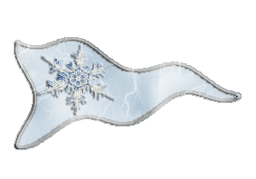
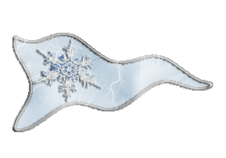

| Übersicht,
Anschläge und Stammtisch (RPG) |
|
KRRRÄÄÄÄGGGG (2  ) )
|
| Falke (RIP) |
ach dior ... ich hab dich auch gern ... bruder darfste wieder zu mir sagen wenn ich pheronie bin ... obwohl ich nicht glaube das der rauschebart mich nochmal begeistern kann ...
ansonsten ... was geht mich negus an ??
dieser fürs leben gestrafte kerl is nunmal in eurem bund ... fertig aus ... lass mich doch auchma pauschalisieren ...
ansonsten ... HAUTSE HAUTSE HAUTSE AUFFE SCHNAUTZE ....
Sir Falke
Zur 21. Stunde am 37.Erntemond im Jahre 428 |
07.04.07 20:25
|
|
| Farodin (RIP) |
darf man mal fragen, worums eigentlich geht??
Baron Shakaar,
Vorsteher von Clouds End
Zur 21. Stunde am 37.Erntemond im Jahre 428 |
07.04.07 20:31
|
|
Kantar
 |
Hallo Shakaar ich glaube um ein paar Bierchen zuviel, das ist wohl alles *belustigt weitergeht*
Baron Kantar,
Vorsteher von Kathargo,
Anführer der glorreichen Nation "Händler der Freiheit",
Witwer von Pebrilia Celil-Galdor
Zur 4. Stunde am 38.Erntemond im Jahre 428 |
07.04.07 21:58
|
|
| Coran (RIP) |
Steht doch oben Shaki, der übliche Scherbenalltag, hauen und gehauen werden oder eben hauen oder nicht hauen, das ist hier die Frage...
und nebenbei alles vollsabbeln.
Coran
Zur 4. Stunde am 38.Erntemond im Jahre 428 |
07.04.07 22:03
|
|
Bhaal
   |
Na toll... da freut man sich schon auf ein paar brennende Städte, vor Angst schreiende Kinder und blutgetränkte Felder und dann... passiert nix.
Nur Glaubwürdigkeit des guten Druidior hat etwas gelitten.
*schlendert ein wenig enttäuscht von dannen*
Markgraf Bhaal,
Vorsteher von Apricus Lacus,
Anführer der glorreichen Nation "Propheten der roten Flut",
Nachtschatten
Zur 8. Stunde am 38.Erntemond im Jahre 428 |
07.04.07 22:57
|
|
| Farodin (RIP) |
ja war mir schon klar, dass hier wieder viel krakehlt wurde, aber wird ja wohl nen Grund haben. Wer haut denn nun so richtig hier wen....*etwas konfus ist*....und vorallem warum??
Baron Shakaar,
Vorsteher von Clouds End
Zur 9. Stunde am 40.Erntemond im Jahre 428 |
08.04.07 10:31
|
|
Aahz
  |
:)
Freiherr Aahz,
Vorsteher von Kleinwichtel-Walhallingen
Zur 19. Stunde am 40.Erntemond im Jahre 428 |
08.04.07 12:43
|
|
| Abdiel der Gehörnte (RIP) |
Die Frage sollte wohl eher lauten: WANN? Wenn wir jetzt auch noch nach dem "Warum" fragen wollten, würden wir ja niemals eine Antwort bekommen. Überhaupt ist das "Warum" heutzutage doch eher verpönt, meist liegt der Grund doch eh schon auf der Hand. Meist lautet die Antwort schlicht und ergreifend "Darum!"...
Abdiel der Gehörnte
Zur 17. Stunde am 41.Erntemond im Jahre 428 |
08.04.07 17:58
|
|
| Jack Pott (RIP) |
War das phonetische Darstellung des alten Haudegen Greg? Eine Liebeserklärung?
Also dass es sich hierbei um Krieg handeln würde, darauf käme ich nicht.
König Jack Pott,
Vorsteher von Larjas Waldburg,
Anführer der glorreichen Nation "Freies Lolandria"
Zur 2. Stunde am 56.Erntemond im Jahre 428 |
12.04.07 2:17
|
|
Übersicht,
Anschläge und Stammtisch (RPG)
|